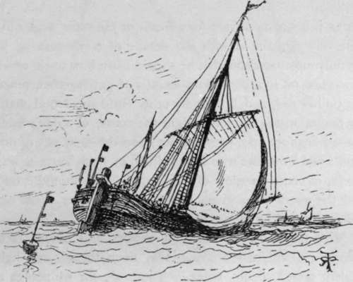

Round The British And Irish Coasts. Part 9
Description
This section is from the book "Sea Fishing", by John Bickerdyke. Also available from Amazon: Sea Fishing.
Round The British And Irish Coasts. Part 9
At Cromer there is codling fishing in autumn, and quantities of flat fish are caught in small beam trawls, on stretches of sand known to the fishermen, lying between reefs of rocks. Crab and lobster fishing is carried on extensively, but amateur sea fishing is very much neglected.
I know of no good sea fishing in the neighbourhood of the Wash, or for some distance northward. Grimsby is, I need hardly say, a sea-fishing station of great importance, but not from our point of view ; the trawlers which sail from it working the North Sea and the Iceland and Faroe fisheries. Close to Grimsby, at Cleethorpes, is a small marine laboratory.
Off the Yorkshire coast the fishing improves, and we meet with large quantities of coalfish, the saithe of Scotland. In their immature state they are known locally as billet, and sometimes afford excellent sport to the fly fisher. They are found round Flamborough Head, which may be fished from the watering-place of Bridlington Quay. But the fishing quarters which I should prefer most in that neighbourhood are at Filey.
In the summer months the chief fishing at this quiet little Yorkshire town is for gurnards and flat fish in the sandy bay. To the northward of the town the great reef of rocks, known as Filey Brigg, stretches out to a considerable distance into the German Ocean, and on the north side of it shoals of billet approach during spring tides. During fair weather they take the fly greedily. This is a very uncertain place, however, and many a blank day must be expected from it. About September there is a run of good-sized codling, which are caught principally at what the local fishermen call the Backside o' Brigg—the back being the south side.
Since I was at Filey, I believe a pier has been built, from which flat fish and gurnard should afford very fair sport. It is difficult to get baits at Filey, especially for the codling, which like nothing so well as large mussels brought from Hull, but— just fancy it !—made in Germany. Off the end of the Brigg there are supposed to be certain large pollack. I never succeeded in catching any myself, nor have I seen anyone more successful, though doubtless an occasional capture is made. Certainly these fish are as scarce as billet are plentiful.
Scarborough, like Filey, is a first-rate place for sea fishing, particularly for cod, in the autumn. Some capital flat fish are caught from the piers and quays, and grey gurnard swarm into the bay in summer. Quantities of billet or coalfish are caught from the shore or pierheads, and there is fairly good mackerel fishing, the usual method being to anchor the boat and fish with drift lines. Codling fishing is somewhat uncertain here, as, indeed, it is in most places, but at times during the autumn is decidedly good, the fish coming close inshore. Lugs, or mussels ' made in Germany,' are certainly the best baits. A good many small coalfish are caught from the piers by drawing a white fly or a gurnard skin fly through the water. Sea fishing is at its best when the tourist season is over, which many amateur sea fishermen will doubtless consider a decided advantage. Those who visit the place should seek the advice of Mr. J. W. Blakey, the Editor of the 'Angler,' and the energetic honorary secretary and founder of the Scarborough branch of the British Sea Anglers' Society.
Northward of Scarborough are several picturesque fishing villages, at almost any one of which fair to good fishing may be expected.
At Whitby is a splendid harbour, always a great convenience, as it obviates beach boats and allows really seaworthy craft to be used ; but the fishing in the harbour itself is not first-rate. A favourite ground for amateur whiting and haddock fishing lies about two miles from the shore. The marks are well known to the local people. Cod, whiting, coalfish, gurnard, etc, are plentiful enough in their season.
Northward of Whitby the herring fishery, with which we have nothing to do, is important. Near Staithes, a picturesque fishing village, quantities of cod, coalfish and haddock are caught on lines. I read of a curious practice here. When the herrings are about, cod and coalfish follow and eat them most ravenously, and, when caught by the fishermen, are found to be full up to their throats. As soon as they are brought ashore the fishwives slit open the marauders, take out so many herrings as are not partially digested and send them to market. In theory these entombed herrings are only used for bait. Cullercoats is another little fishing village near the Tyne, and here a good deal of line work is done. The place possesses a small harbour. All along the Northumbrian coast are dotted little fishing villages, the inhabitants of which use the curious craft known as cobbles.
This concludes my brief survey of the English, Welsh, Scotch (including the outlying islands) and Irish coasts ; but nothing has been said about the Channel Islands. There is a good deal of fishing both from pier and boat at St. Peter's Port, Guernsey, which should be visited between April and July, and the fishermen of the island are particularly expert in the use of the living sand eel as bait. It was from them, I believe, that Mr. Wilcocks learnt the importance and value of the method which he has introduced among fishermen on the English coasts. There is a great deal of sea fishing also round Jersey, but Mr. Wilcocks says it is not so good as in the neighbourhood of the sister islands. Alderney affords first-rate pollack fishing, and bream, pout, and occasionally bass are plentiful. It is not altogether safe to go beyond the breakwater without a local boatman, as the currents which twist and twirl among the rocks are dangerous near the island of Burhou, beyond the Singe Passage. Capital fishing and many varieties of sea fish are caught from the breakwater and other suitable places along the shore. The Channel Island fishermen are expert in the use of a shrimp ground bait called chervin, which reminds me that they term smelts, gradots ; pollack, whiting ; octopus, pieuvre ; squid, conee ; and cuttlefish, seche.
Of course I make no pretence of writing a complete guide to the British and Irish coasts. I have simply aimed at giving, in these few notes, a general idea of those parts of the coasts at which good sport may be expected, and also of certain places which should be shunned by the enthusiastic sea fisher.
A word here as to the importance of the British fisheries. At the fishing stations I have referred to were landed during 1894, 14,046,000 cwt of fish other than shell fish. At the port of landing these were worth nearly 7,000,000 l. Many tons of them, however, came from foreign waters. With shell fish the total takes are valued at 7,200,000 l.
DUTCH BUIS LAYING NETS.
Continue to:
- prev: Round The British And Irish Coasts. Part 8
- Table of Contents
- next: Chapter III. Whippings, Servings, Knots, Hooks, And Sundry Wrinkles
Tags
fishing, hooks, bait, fishermen, spanish mackerel, mackerel fishing